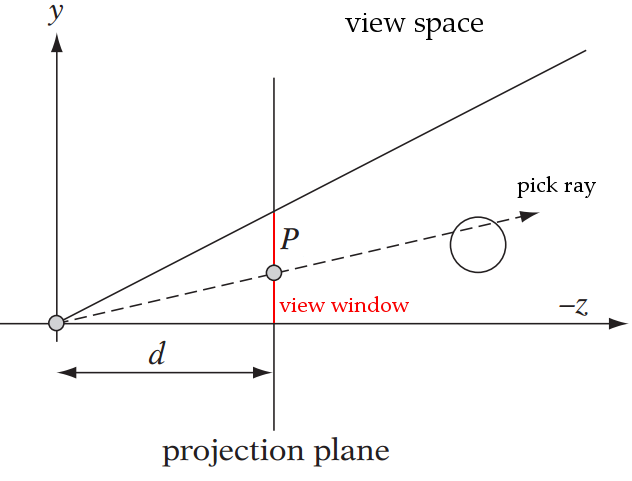
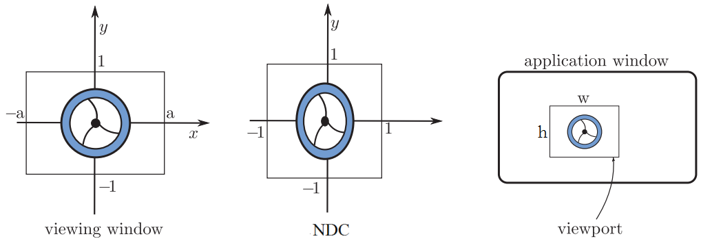

Overview
- Rendering: mapping 3D data on to a 2D canvas
- Picking: mapping a 2D point to a 3D world
- Inverse: need to run pipeline backwards
-
Normalized Device Coordinates
- standardese for Canonical View Volume
- Visible volume that gets rasterized finally
- NDC $(x, y, z) \in [-1, 1]$
\begin{gather*}
View \xrightarrow{projection} Clip \xrightarrow[Z]{divide} NDC \xrightarrow{viewport} Screen
\end{gather*}
Pick Ray

Credit: James M. Van Verth, Lars M. Bishop
Essential Mathematics for Games and Interactive Applications
Spaces without Z

Credit: Ganovelli, Corsini, Pattanaik, Benedetto
Introduction to Computer Graphics ~ A Practical Learning Approach
Screen → View
- Pick ray constructed in view space but got $x_{scr}$ and $y_{scr}$
- Map Screen → NDC → Clip → View
- Clip space (4D) can be ignored
- Space to set up $z$ in $w$ for perspective divide
- Used only for clipping otherwise
- Essentially find Screen → NDC → View (with $z$ dropped)
- Rectangle mapping: $[w, h] \mapsto [2, 2] \mapsto [2a, 2]$
- Should require only scaling and translation
Screen → NDC
- Rendering: NDC cube $\mapsto$ screen space cuboid such that
- $x_{scr} \in [0, w]$
- $y_{scr} \in [0, h]$
- Rectangle dimensions do not vary with depth for both volumes
- Straight forward inversion; one rectangle to another
\begin{align}
\require{enclose}
\enclose{box}{x_{ndc} = \frac{2 x_{scr}}{w} - 1} &&
\enclose{box}{y_{ndc} = -\frac{2 y_{scr}}{h} + 1} \qquad (1)
\end{align}
NDC → View
- Rendering: view frustum $\mapsto$ NDC cube
- Rectangle dimension varies based on depth in frustum
- Depth already chosen: view plane's z = focal length
- View window dimensions, where $a$ is aspect ratio
\begin{align}x_v \in [-a, a] && y_v \in [-1, 1] \end{align}
- Map one rectangle to another like before
\begin{align}
x_v = a x_{ndc} && y_v = y_{ndc} \qquad(2)
\end{align}
- Final Screen $\mapsto$ View by substituting $(1)$ in $(2)$
\begin{align}
\enclose{box}{x_v = \frac{2ax_{scr}}{w} - a} &&
\enclose{box}{y_v = -\frac{2y_{scr}}{h} + 1}
\end{align}